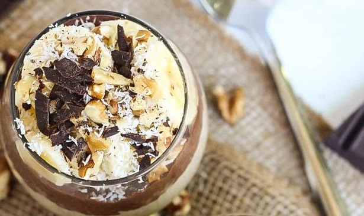
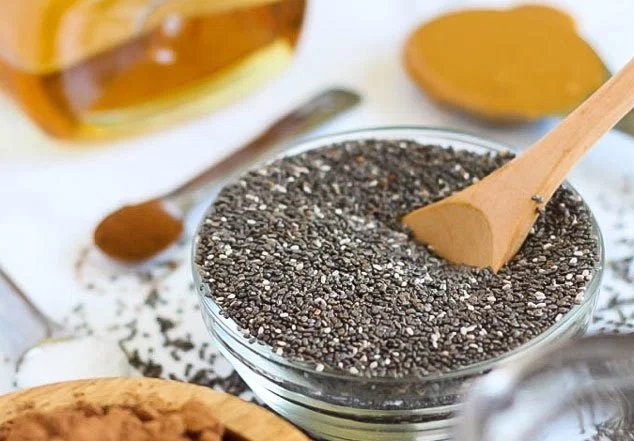

Easy Eatz! Recipes !

Peanut Butter Cup Chia Seed Pudding
10 minutes| Serves 4|
A bowl of Peanut Butter Cup Chia Seed Pudding will have you feeling like you're eating candy. This chocolatey recipe makes a nutritious breakfast or snack!
Ingredients:
1/2 cup chia seeds
2 cups almond milk
1/4 cup cocoa powder
2-3 tablespoons maple syrup or agave nectar
1 1/2 teaspoons vanilla extract, divided
1/4 teaspoon salt
2 tablespoons natural peanut butter
1/8 teaspoons cinnamon 
Instructions:
n a medium bowl, add 5½ tablespoons chia seeds, 1⅓ cups milk, cocoa powder, 1-2 tablespoons maple syrup, 1 teaspoon vanilla, and ¼ teaspoon salt. Whisk until all ingredients are combined. In a small bowl, add 2½ tablespoons chia seeds, ⅔ cup milk, peanut butter, 1 tablespoon maple syrup, ½ teaspoon vanilla, ⅛ teaspoon salt, and cinnamon. Whisk until all ingredients are combined. Place both bowls in the fridge. Let them sit overnight, or at least 3 hours. To arrange, scoop desired amount of chocolate chia seed pudding into a cup or bowl, top with a scoop of peanut butter chia seed pudding, then another chocolate layer. Top with whatever you'd like! 